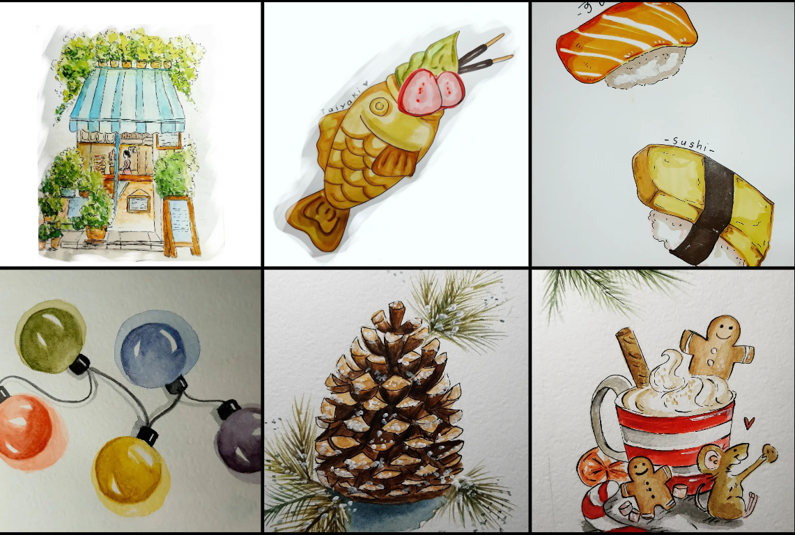
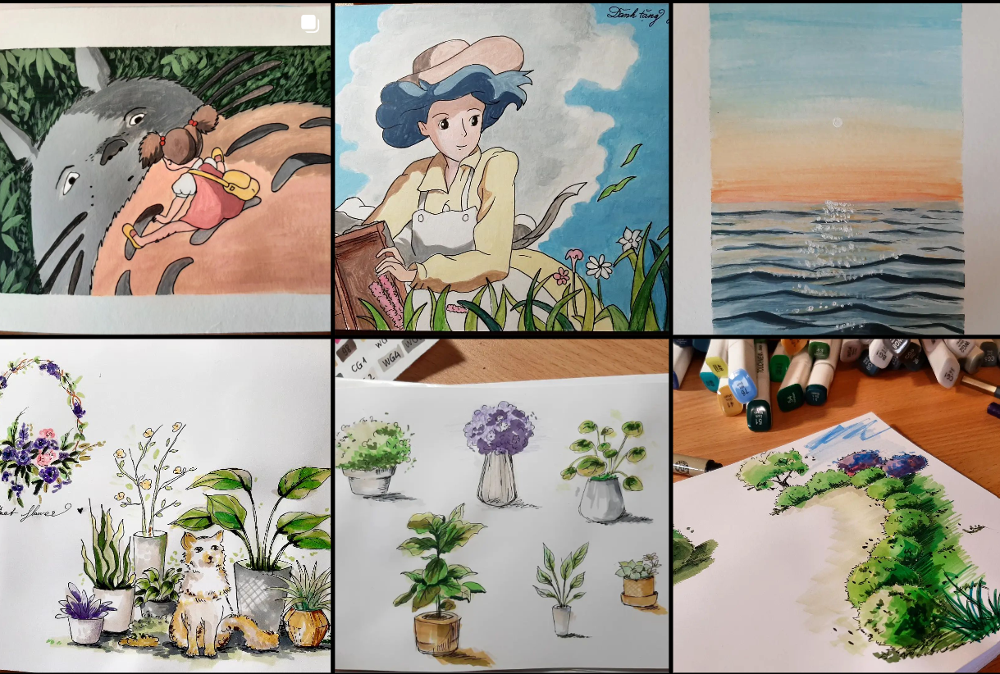
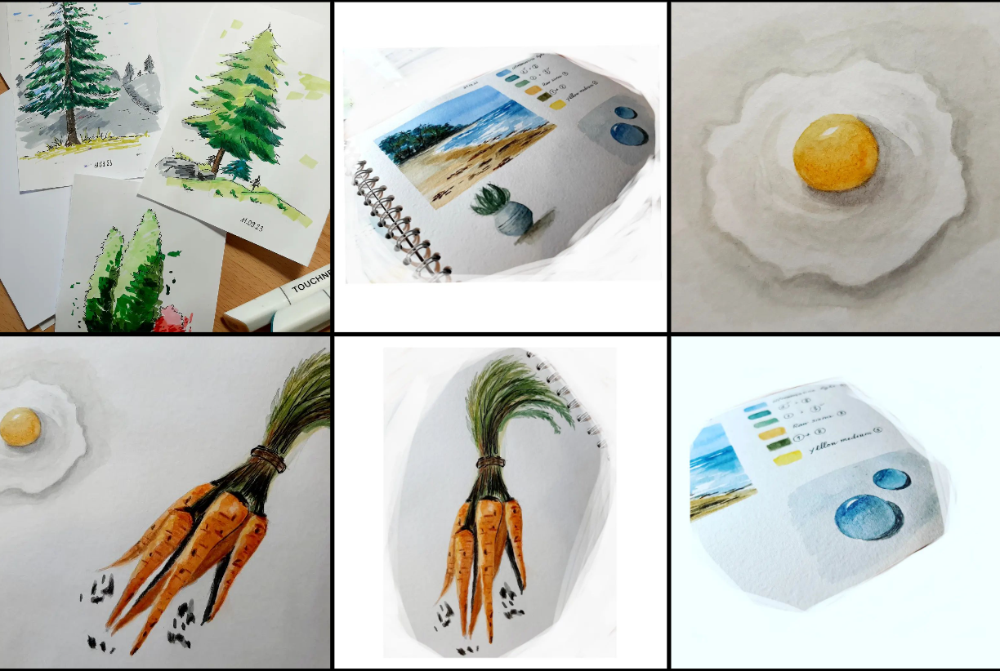

XIN CHÀO CÁC BẠN MẾN YÊU CỦA XOÀI
Hello my beloved friends!
Привет, дорогие мои!
🌿( ˘͈ ᵕ ˘͈♡)
Chào mừng các bạn đã đến với trang web mang phong cách cổ điển những năm đầu thập niên 90 của bạn Xoài, một trang web được bạn Xoài tập tễnh viết ra bằng ngôn ngữ lập trình HTML như một bài tập nhỏ sau vài buổi học le que trên Udemy. Bạn Xoài cảm thấy rất hạnh phúc vì bây giờ bạn Xoài đã biết thêm một nơi nữa để lưu giữ những câu chuyện thủm rẹt của mình mà không phải dùng mạng xã hội nữa. Và cũng rất cảm ơn các bạn đã ghé đến và đọc những câu chuyện thủm rẹt của mình nha. Gửi đến các bạn 1 tỷ cái ôm!
Hey there! Welcome to my super retro style website of the early 1990s. I wrote it by HTML after taking a few online lessons on Udemy, so bear with me if it’s not perfect. I’m so thrilled because now I have a new place to jot down all my silly thoughts from everyday life, without using social media. Thanks a ton for visiting my website and taking the time to read my silly stories. Sending you a billion hugs!
Привет! Добро пожаловать на мой супер ретро-стильный веб-сайт начала 1990-х. Я собрала его на HTML после нескольких онлайн-уроков на Udemy, так что прошу прощения, если не все идеально. Я очень рада, потому что теперь у меня есть новое место, где я могу записывать все свои глупые мысли из повседневной жизни, не прибегая к использованию социальных сетей. Спасибо огромное за посещение моего веб-сайта и время, которое вы уделили чтению моих глупых историй. Посылаю вам миллиард обнимашек!
🌿🌿🌿
Mình có vài bức tranh nho nhỏ muốn tặng các bạn...
I have a couple of tiny paintings that I would like to gift to all of you...
У меня есть несколько небольших картинок, которые я хочу вам подарить...
Some types of materials that I have used for my drawing:
♡ Watercolor
♡ Watercolor pencils
♡ Markers
♡Acrylic
Feel free to click on the link to visit my Drawing page for more artwork :) My Drawing page's link


